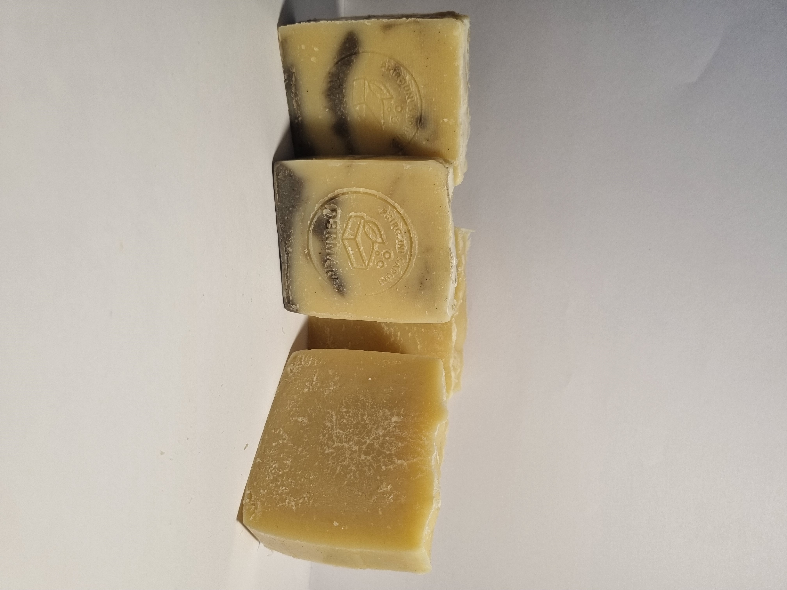
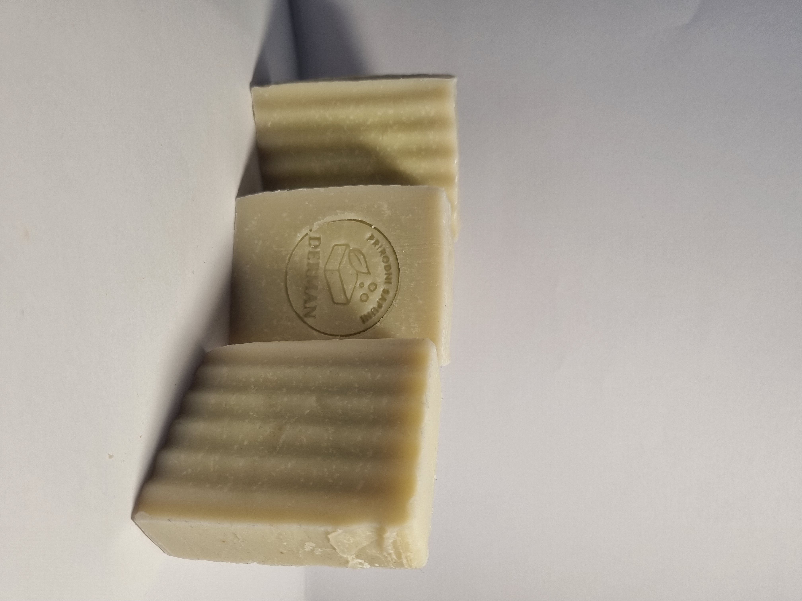

Moja priča
Derman Sapuni su nastali iz želje da koži pružim prirodnu i jednostavnu njegu. Svaki sapun je pravljen i rezan ručno, u malim serijama, koristeći kvalitetna ulja i pažljivo birane sastojke bez nepotrebnih hemikalija.
Vrste sapuna

☕ Sapun od kafe
Prirodni piling efekat, idealan za osvježenje kože.
60g – 5 KM

🥛 Sapun sa mlijekom
Blaga njega bez dodatih mirisa, pogodan za osjetljivu kožu.
60g – 5 KM

🍋 Mlijeko + limunski eukaliptus
Svjež i prirodan miris sa osvježavajućim efektom.
60g – 5 KM
100g – 7 KM

🌿 Limited Aloe Vera
Specijalna limitirana serija sa dodatkom domaće aloe vere.
100g – 7 KM
Naručivanje
Za narudžbe i dodatne informacije javite se putem Instagrama.
Kontaktiraj putem Instagrama